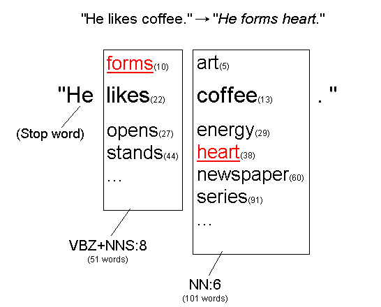
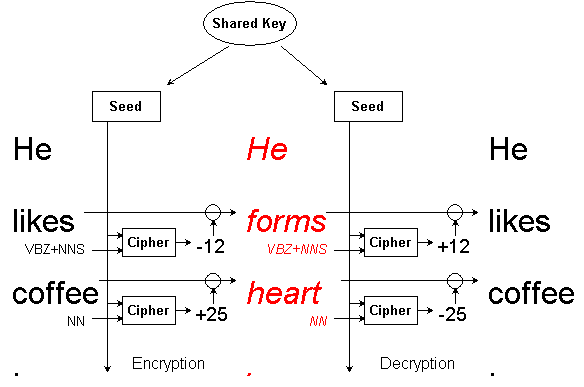
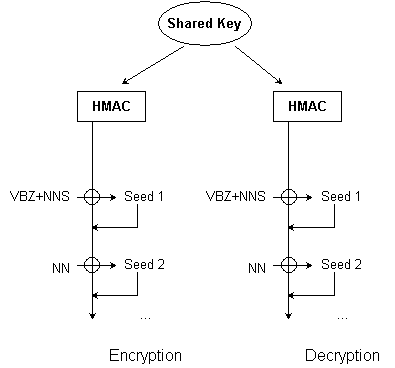

NLCrypt is an attempt to create a cryptography system that doesn't look like a cryptography. It disguises a secret message as a grammatical (but nonsensical) text by changing its meanings. It can be used for a casual use to slip a secret message into web forums or emails. NLCrypt currently supports English text only.
Warning: This is just a proof-of-concept implementation. The encryption algorithm is not analyzed therefore there's no guarantee on its security or reliability. Do not use this for serious purposes.
NLCrypt is basically a combination of a dictionary cipher and a Caesar method. It takes each word in a message (except stop words) and shifts it in a dictionary.
Here's an example:
In a message "He likes coffee.",
the words "likes" and "coffee" are
tagged as VBZ+NNS and NN respectively.
These are part of speech tags, meaning that
"likes" can be either a present tense verb
(VBZ) or a plural noun (NNS), while "coffee"
always takes a singular form (NN) because it is a mass noun.
Now, there are several other words that are tagged as VBZ+NNS.
Such words include: adds, backs,
calls, changes, ... etc.
"likes" is the 22nd word in this group. This is replaced
with another word in the group such as "forms".
Note that changing "likes" to
"forms" doesn't change the sentence's
grammatical structure, because both can take a present tense verb or a
plural noun (VBZ+NNS).
Similarly, "coffee" is replaced with another word in
the NN group, such as "heart".
This way, the entire message is translated to
"He forms heart.", which is grammatically
equivalent to the original sentence but has a rather different meaning.
Using a certain cipher algorithm and a given key,
the translation can be different which is hard to predict
for outsiders.

Actual words are grouped not only by its part of speech, but also its frequency. This serves two purposes. First, this prevents a popular word from suddenly getting replaced with a rather uncommon word, because it would look unnatural. The transition of a word is limited to the similarly popular words. Secondly, this prevents the frequency analysis because the rarity of each word doesn't give a hint to attackers.
In the actual implementation, a group of words is named
using both its parts of speech and the frequency,
such as VBZ+NNS:8, which means
a word that can take either VBZ or NNS
and has a frequency level 8. A frequency level is defined as
the logarithm of the word occurrences.
The basic idea is to create a pseudo-random sequence from a shared secret. In the following example, the cipher takes the shared secret and the group ID of each word and generate a number. The number is either added or subtracted from the word number depending on the type of processing (encryption or decryption).

Furthermore, we can use HMAC instead of a constant seed. The HMAC is updated for each word using its output. This allows the input of the cipher to be different for every word, making the output more unpredictable (similar to cipher block chaining in standard cryptography).

In this implementation, we use HMAC-MD5 and RC4 for the HMAC and the cipher function, respectively.
We use WordNet version 3.0.
It contains about 85,000 base words. The dictionary is expanded
by an additional program (mkdict.py) to include
different tenses and numbers. The total number of expanded
words is 191,606 in 468 groups.
A separate list of stop words is used to exclude function words such as pronouns or conjunctions.
The algorithm is vulnerable to words which are not in a dictionary, such as rare words, foreign words, proper nouns, numbers and URLs. In such cases a letter-to-letter encryption is used, which can be vulnerable to a known plaintext attack.
There are about 700 words that belongs to one of 239 groups that has
less than 10 words. These words are easier to guess the original.
For example, the group VB+VBP+RB:0 has
only one word: "dingdong"